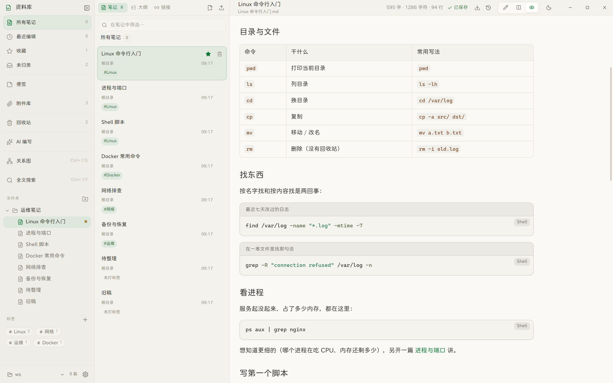
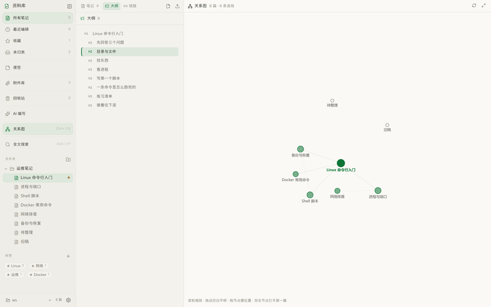
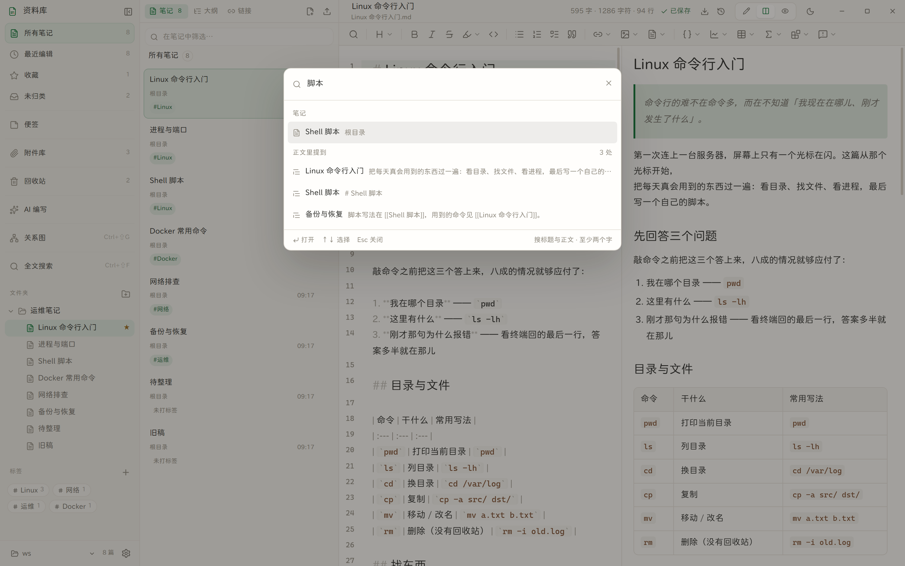

01
纯本地，也陪你上云
笔记就是你目录里的 .md 文件，断网照常写。想跨设备时填一个 WebDAV 地址——同步在后台按文件比对新旧，冲突会留底，谁的字都不会被悄悄覆盖。
文件躺在你自己的目录里，就是一份份普通的 Markdown。 不联网、不上传、不要账号 —— 换任何编辑器打开，都还是你写的那些字。

没有插件市场，没有强制注册，没有「协作邀请」。该有的编辑能力一个不少，不该打扰的一样都没有。
笔记就是你目录里的 .md 文件，断网照常写。想跨设备时填一个 WebDAV 地址——同步在后台按文件比对新旧，冲突会留底，谁的字都不会被悄悄覆盖。
任何程序里按 Alt+N，屏幕角落弹一张纸：连按连开、自动保存、Esc 收起。
[[笔记]] 弹选择器选，不用手打；关系图把谁提到了谁画成连线，孤岛一眼可见。
分栏同步滚动、行号、代码高亮、补全。源码即文件，别的工具也认。
十一种提示块轻重分明；Mermaid 配色跟深浅主题走，换主题会重画。
Markdown / HTML / PDF / Word。公式走 MathML，图表转图像。
接你自己的模型 —— 本机 Ollama 也行，任意 OpenAI 兼容接口也行。联网检索是应用替模型去查的，本地模型同样能用；不填密钥，这些功能连入口都不出现。
下面每一张都是真实界面截图，不是画出来的示意图。点开可以看大图。




便签不读笔记库、不建文件树、不连任何服务 —— 只有一条标题栏和一个输入框。所以它必须在按下去的那一秒就出现。
屏幕角落弹一张纸，连按连开、位置自动错开。Esc 收起，内容早就存好了，不会丢。
正文里打 #docker 就真的挂上了这个标签；- [ ] 会变成能点的方框。标签是写字的副产品，不是一道额外工序。
按一下存进笔记库的 便签/ 目录，纸自己折进抽屉，底下浮一条提示带撤销。同名自动加序号，不会盖掉你写好的东西。
填一个 WebDAV 地址，Nota 在后台按文件比对新旧：本地改了推上去，云端改了拉下来。
同步不经过任何第三方服务器，也不需要把笔记交给谁保管。密钥存在本机，换一台机器填同一个地址就接着写。
Windows 10 / 11，64 位。装上就能用，不需要账号，也不会往后台挂任何东西。
不想装？下载免安装版，双击直接进界面
手机上装不了 .exe。
换台 Windows 电脑，打开 ymtj.hyper99.top
双击后十几秒没出窗口，不是卡住。 Windows 会先把整个安装包扫一遍才放行；这个包没有代码签名证书，扫得比一般软件更久。 若弹出「已保护你的电脑」，点「更多信息 → 仍要运行」就行。 装的时候位置可以改，不想要快捷方式就选「直接运行」，一个文件两种用法。